Our principal goal is to explain how to create a Graded Math App that can be included in a question for Möbius. Obviously, Math Apps can also be used in Maple. The only difference is how Math Apps are launched and how the arguments are supplied to them. We will talk about that at the end of this document.
The reader can find other examples of Math Apps on the Math Apps site that can be reached by selecting the option Tools → Math Apps (item 1 in the figure below) of the menu at the top of the display in Maple.
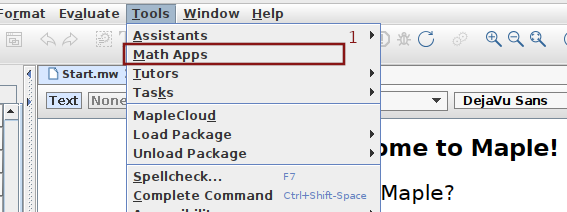
To read the code of the Math Apps that has been selected, it suffices to tick the box before the Editable tag at the bottom of the display of the selected Math Apps (item 2 in the figure below).
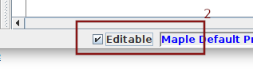
Suppose that we want to build a Math App where, given a function and an initial condition, students have to draw the cobweb associated to the iterations of the function from the initial condition. The Math App will grade the cobweb based on a predetermined number of iterations and level of accuracy.
The part of a question for Möbius that includes the Math App is displayed below.
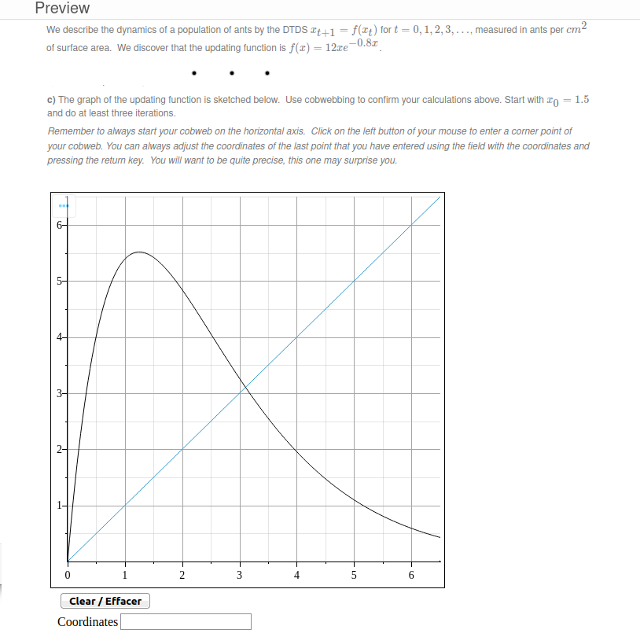
To draw the cobweb, students click on the plot area with the left button of their mouse to add in successive order the corners of their cobweb. The Math App draws the straight line between consecutive points to produce the cobweb. Students may use a text area to adjust the coordinates of the point that they have just added to the plot area. Students may click on the button Clear / Effacer to start over if they are not satisfy with their work.
The reader should consult the website for Möbius to learn how to create a question in Möbius that includes a Math App.
We display below the Math App as it appears when used in Maple.
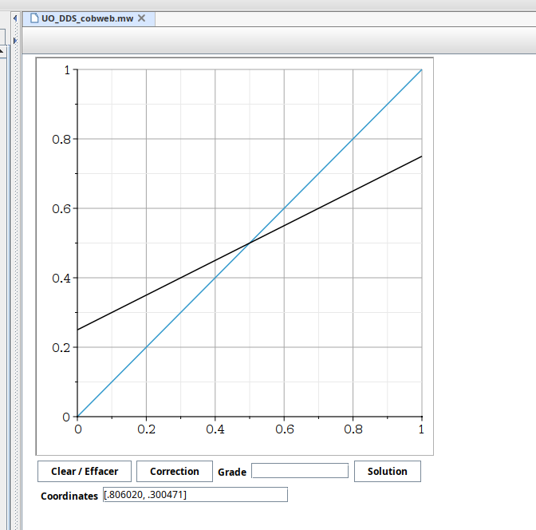
The Math App is composed of the following components:
The purpose of each component is not hard to guess.
There are a large choice of components that can be used to create a Math App. At this time, the list includes Button, Toggle Button, Combo Box, Check Box, Radio Button, Text Area, Label, List Box, Slider, Rotary Gauge, Volume Gauge, Meter, Dial, Plot, Mathematical Expression, Shortcut, Microphone, Speaker, Data Table and Video Player. They are all found in the menu bar on the left of the display in Maple.
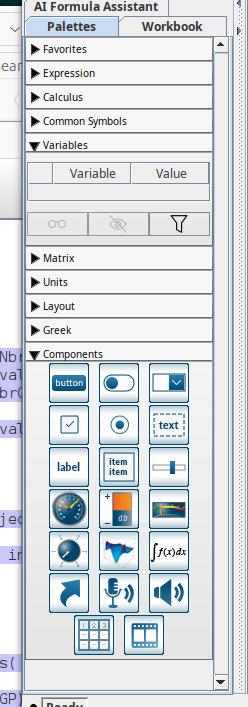
Each type of component is represented by an icon in the menu on the left of the display in Maple. It suffices to click on an icon representing a type of component to include such a component in the Math App. The position of the component is determined by the position of the cursor in the display of the Math App before clicking on the icon.
In the menu at the top of the display in Maple, we select Edit → Starting Code (items 7 and 8 in the figure below).
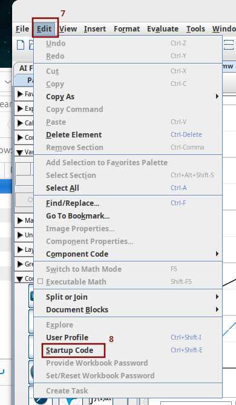
to get the following window.
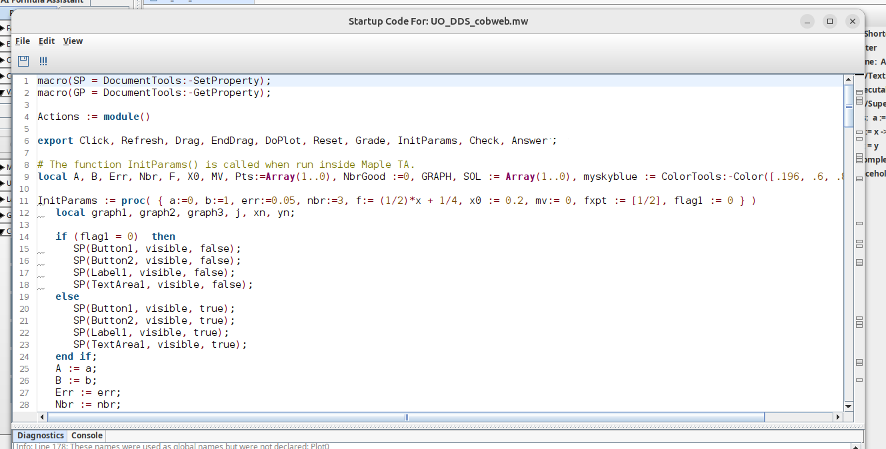
Obviously, this window is empty when we access it for the first time. This is the location of the core code of the Math App that we are building. We have already written the code. We explain in details all the elements of this code.
Since the functions
SetProperty
and GetProperty are often used, it is
convenient to define two macros
to simplify the code.
macro(SP = DocumentTools:-SetProperty); macro(GP = DocumentTools:-GetProperty);
The command Actions := module() indicates the beginning of the module that will be used by the Math App. The command export declares as globally accessible all the procedures of the module that are used by the components of the Math App.
Actions := module() export Click, Refresh, Drag, EndDrag, DoPlot, Reset, Grade, InitParams, Check, Answer;
There is a declaration of the variables that are local to the module but can be used by all the procedures in the module. The arrays are initialized by empty arrays.
local A, B, Err, Nbr, F, X0, Flag1, MV, Pts:=Array(1..0), NbrGood :=0, GRAPH, SOL := Array(1..0), myskyblue := ColorTools:-Color([.196, .6, .8]);
The procedure InitParams is called by Möbius to initialize the Math App when the question of the assignment on Möbius is read for the first time by the student. The procedure InitParams is also used to initialize the Math App when it is run in Maple.
# The function InitParams() is called to initialize the Math App.
InitParams := proc( { a:=0, b:=1, err:=0.05, nbr:=3, f:= (1/2)*x + 1/4,
x0 := 0.2, mv:= 0, flag1 := 0 } )
local graph1, graph2, graph3, j, xn, yn;
if (flag1 = 0) then
SP(Button1, visible, false);
SP(Button2, visible, false);
SP(Label1, visible, false);
SP(TextArea1, visible, false);
else
SP(Button1, visible, true);
SP(Button2, visible, true);
SP(Label1, visible, true);
SP(TextArea1, visible, true);
end if;
A := a;
B := b;
Err := err;
Nbr := nbr;
F := f;
X0 := x0;
Flag1 := flag1;
xn := X0;
yn := 0;
ArrayTools[Append](SOL, [xn,yn]);
yn := evalf(subs(x=xn, F));
ArrayTools[Append](SOL, [xn,yn]);
for j from 1 to Nbr-1 do
xn := yn;
ArrayTools[Append](SOL, [xn,xn]);
yn := evalf(subs(x=xn, F));
ArrayTools[Append](SOL, [xn,yn]);
end do;
if ( mv = 0 ) then
MV := max(B, maximize(f,x=A..B));
else
MV := mv;
end if;
graph1 := plot([[A,A],[B,B]], color=myskyblue, gridlines=true, view=[A..B,0..MV]):
graph2 := plot( F, x=A..B, color=black, view=[A..B,0..MV]):
# graph3 is used only to ensure that the horizontal axis will be displayed.
graph3 := plots[pointplot]([[A,0],[B,0]], symbol=point, color=black):
GRAPH := plots[display]([graph1, graph2, graph3]);
Reset();
end proc;
The initial parameters are listed below.
The variable SOL is initialized with all the points that form the corners of the cobweb including the initial condition at (X0,0}.
The plot GRAPH that is part of the Math App is composed of three superposed plots. The plot graph1 contains the diagonal line \(y = x\). The plot graph2 contains the graph of the function F on the interval [A,B]. The plot graph3 contains the points (A,0) and (B,0). This third plot ensures that the horizontal axis is displayed and covers all the interval [A,B].
Click := proc()
local x, y;
x := GP('Plot0', 'clickx');
y := GP('Plot0', 'clicky');
ArrayTools[Append](Pts, [x,y]);
SP(TextArea0, value, [evalf[6](x),evalf[6](y)]);
DoPlot();
end proc;
This procedure does three things. It first gets the \(x\) and \(y\) coordinates of the point that a student wants to drawn. The procedure then adds these coordinates to the variable Pts. Finally, the procedure draws in the plot area Plot0 the newest point and a straight line from the previous point to the new point if needed.
The optional argument [6] to the function evalf is the number of digits that the values that it returns must have.
We have to attach this procedure to the plot area Plot0 otherwise it does not know that it has to call the procedure Click. To attach the procedure, we go to the display of the Math App in Maple and click on the plot Plot0. We then get the following menu on the right side of the display in Maple.
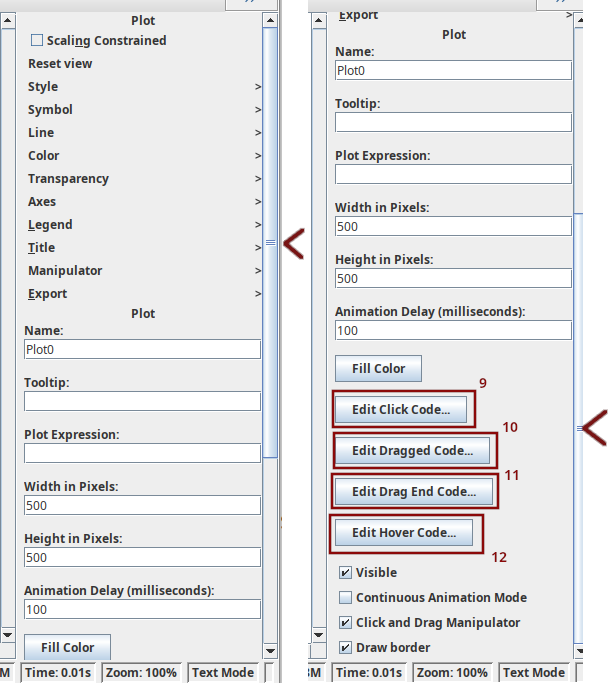
After clicking on the button Edit Click Code (item 9 in the figure above), we get the following display where we can enter the code to be executed when a student click on the plot area.
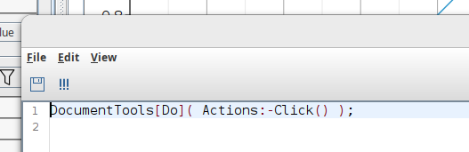
Initially, this window contains a default code like with(DocumentTools): ... or Use DocumentTools in .... That code must be deleted because it will not work inside Möbius. This two commands work fine in Maple but clash with some of the code used by Möbius. For our Math App, it suffices to enter the following command.
DocumentTools[Do](Actions:-Click() );
More code could be added but the variables defined in the Starting Code are not accessible.
The next two procedures are Drag and EndDrag
Drag := proc()
local x, y, N;
x := GP('Plot0', 'endx');
y := GP('Plot0', 'endy');
N := numelems(Pts);
Pts[N] := [x,y];
SP(TextArea0, value, [evalf[6](x),evalf[6](y)]);
DoPlot();
end proc;
EndDrag := proc()
return NULL;
end proc;
Like the procedure Click, the procedure Drag does three things. It first gets the new \(x\) and \(y\) coordinates of the last point drawn by the student after the student has dragged it. The procedure then modifies the variable Pts by replacing the old coordinates of the last point drawn by the student by the new coordinates. Finally, after having erased the last point with the previous coordinates and the straight line from it to the previous point if any, the procedure draws in the plot area Plot0 the point with the new coordinates and draws a straight line from it to the previous point if necessary.
The procedure EndDrag does nothing.
As we did for the procedure Click, we must attach the procedures Drag and endDrag to the plot area using this time the items Edit Dragged Code and Edit Drag End Code respectively in the menu on the right side of the display in Maple (items 10 and 11 respectively in the figure previous to the last one). It suffices to add the command
DocumentTools[Do](Actions:-Drag() );
to the display obtained by clicking on Edit Dragged Code and the command
DocumentTools[Do](Actions:-endDrag() );
to the display obtained by clicking on Edit Drag End Code.
Since the procedure endDrag does nothing, we could have simply inserted a comment in the display obtained by clicking on Edit Drag End Code and have completely ignored the procedure endDrag. That is what is done in the display obtained by clicking on Edit Hover Code (item 12 in the figure previous to the last one) as it is illustrated below.
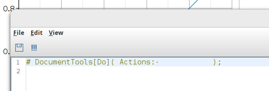
The procedure Refresh is attached to the text area TextArea0 associated to the label Coordinates. Student can modify the coordinates of the point that they have just drawn by writing in the text area the coordinates that they want this point to have. The coordinates must be in the format [x,y] (using square brackets is compulsory).
Refresh := proc()
local x, y, N, coord;
coord := parse(GP('TextArea0','value'));
x := coord[1];
y := coord[2];
if ( is(x < A) or is(x > B) ) then
return NULL;
end if;
N := numelems(Pts);
Pts[N] := [x,y];
DoPlot();
end proc;
The procedure does four things. It first gets the new \(x\) and \(y\) coordinates of the last point submitted by the student. There is a minimal test to make sure that the \(x\) coordinate is at least in the interval [A,B]. The procedure then modifies the variable Pts by replacing the old coordinates of the last point drawn by the new coordinates. Finally, after having erased the last point with the previous coordinates and the straight line from it to the previous point if any, the procedure draws in the plot area Plot0 the point with the new coordinates and draws a straight line from it to the previous point if necessary.
To attach this procedure to the text area TextArea0 associated to the label Coordinates, we go to the display of the Math App in Maple and click on the text area TextArea0. We get the following menu on the right side of the display in Maple.
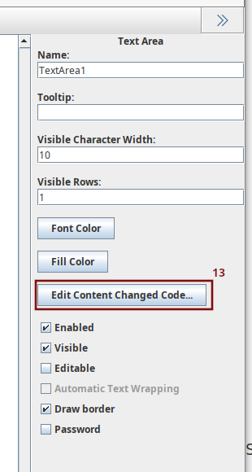
By clicking on the button Edit Content Change Code (item 13 in the figure above), we get the following display where we enter the code to be executed when a student enter coordinates in the text area and press the Enter key.
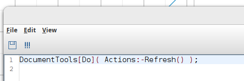
In the present case, we enter the following command.
DocumentTools[Do](Actions:-Refresh() );
DoPlot := proc()
local vertices, edges;
vertices := plots[pointplot](Pts, symbol=solidcircle, symbolsize=10, color=blue):
if ( numelems(Pts) > 1 ) then
edges := plot(Pts, color=blue);
SP(Plot0, value, plots[display]([GRAPH, vertices, edges]));
else
SP(Plot0, value, plots[display]([GRAPH, vertices]));
end if;
end proc;
As mentioned before, this procedures not only draw the points provided by the students but also draws the lines connecting consecutive points if necessary.
The procedure Reset is attached to the button Clear / Effacer. It erases the cobweb drawn by a student and resets the plot area to its initial state. This procedure also clears the text areas associated to the labels Coordinates and Grade.
Reset := proc() Pts := Array(1..0); NbrGood := 0; SP(Plot0, value, GRAPH); SP(TextArea0, value, ""); SP(TextArea1, value, ""); end proc;
As we have seen before, to attach this procedure to the button Clear / Effacer, we go to the display of the Math App in Maple and click on the button to get the menu on the right side of the display in Maple to edit this button. By clicking on the button Edit Click Code in the menu on the right side, we get the display to enter the code to be executed when a student clicks on the button Clear / Effacer. We have inserted the following command.
DocumentTools[Do](Actions:-Reset() );
When the Math App is include in a question that student may use for practice, the instructor may give access to the button Solution that students can use to request the solution. The procedure Answer given below is attached this button.
Answer := proc() Reset(); Pts := SOL; DoPlot(); end proc;
The procedure does three things. It first clears and resets the plot area to its initial state. It also clears the text areas. The procedure then fills the variable Pts used to draw the cobweb with the exact coordinates of the points forming the corners of the cobweb. Finally, the procedure draws the cobweb.
The steps to attach this procedure to the button Solution are the same steps than those used to attach the procedure Reset to the button Clear / Effacer. The only difference is that the code inserted in the display obtained by clicking on the button Edit Click Code is the following command.
DocumentTools[Do](Actions:-Answer() );
The procedure Check determines which of the points drawn by a student are correct. The procedure also redraw the cobweb submitted by the student where the correct elements of the cobweb are drawn in green and the incorrect ones are drawn in red. This procedure is called by the procedure Grade that we describe later.
Check := proc()
local N1, N2, j, J:=0, k, pt, d, indices, goodEdges:=Array(1..0),
badEdges:=Array(1..0), goodPts:=Array(1..0), badPts:=Array(1..0), badP, goodP;
N1 := 2*Nbr;
indices := Array(1..N1);
N2 := numelems(Pts);
NbrGood := 0;
for k from 1 to N1 do
if ( k <= N2 ) then
pt := Pts[k];
d := sqrt((SOL[k][1]-pt[1])^2 + (SOL[k][2]-pt[2])^2);
if ( is(d < Err) ) then
NbrGood := NbrGood + 1;
indices[k] := 1;
end if;
else
break;
end if;
end do;
for j from 1 to N1 do
if ( j <= N2 ) then
if ( indices[j] = 1 ) then
ArrayTools[Append](goodPts, Pts[j]);
if ( j > 1 ) then
if ( J = 1 ) then
ArrayTools[Append](goodEdges, plot([Pts[j-1],Pts[j]], color=green));
else
ArrayTools[Append](badEdges, plot([Pts[j-1],Pts[j]], color=red));
end if;
end if;
J := 1;
else
ArrayTools[Append](badPts, Pts[j]);
if ( j > 1 ) then
ArrayTools[Append](badEdges, plot([Pts[j-1],Pts[j]], color=red));
end if;
J := 0;
end if;
else
# Only used when the button solution is visible
if ( Flag1 = 1 ) then
ArrayTools[Append](badPts, SOL[j]);
if ( j-1 = N2 ) then
ArrayTools[Append](badEdges, plot([Pts[N2],SOL[j]], color=red));
else
ArrayTools[Append](badEdges, plot([SOL[j-1],SOL[j]], color=red));
end if;
end if;
end if;
end do;
badP := plots[pointplot](badPts,symbol= diagonalcross, symbolsize=15, color=red);
goodP := plots[pointplot](goodPts,symbol= solidcircle, symbolsize=10, color=green);
SP(Plot0, value, plots[display]([GRAPH, goodP, badP,
seq(goodEdges[i],i=1..numelems(goodEdges)),seq(badEdges[i],i=1..numelems(badEdges)) ]));
end proc;
The first loop count the number of good points and register their location in the variable Pts. A point drawn by a student is marked good if its Euclidean distance to the corresponding exact point on the cobweb is less than the tolerated error. The second loop determines the straight lines that are good (those that link two consecutive good points) and those that are bad (those that link two consecutive good points where at least one point is not a good one). Finally, the entire plot area is redraw with the student cobweb where the good elements of the cobweb are in green and the bad ones are in red.
The section of the code associated to the comment # Only used when the button solution is visible is used to get a complete correction of the cobweb submitted by a student in function of the full cobweb required in the question; namely, not only limited to the points that the student has drawn. This part of the code should not be used if the intention is to include the Math App in a question for Möbius that uses How did I do? We do not want students to use How did I do? to get the full solution.
The procedure Grade is the procedure used by Möbius to mark the question when the assignment is submitted. This procedure also called by How did I do? in Möbius. Moreover, this procedure is also attached to the button Correction when students are allowed to use this button in a practice assignment.
Grade := proc()
local Nbr2;
Check();
Nbr2 := 2*Nbr;
if ( NbrGood > 3*Nbr/2 ) then
SP(TextArea1, value, evalf(NbrGood/Nbr2));
return evalf(NbrGood/Nbr2);
else
SP(TextArea1, value, 0);
return 0;
end if;
end proc;
A grade other than 0 is given when at least 3/4 of the points drawn by the student (out of a required total of Nbr points) are right. The grade is displayed in the text area TextArea1 associated to the button Correction. The grade is also returned by this procedure. This is the value used by Möbius.
We end the code of the module with the following statement.
end module;
There are two extra lines after the previous statement.
# Actions:-InitParams( flag1 = 1 , f=4*x*(1-x) , nbr = 5 ); macro(SP = SP, GP = GP);
To run the Math App in Maple, the line # Actions:-InitParams(... must not be commented out. The only arguments of Actions:-InitParams() that have been redefined are the variables flag1, f and nbr but the other arguments can also be redefined. We set flag1=1 to get the hidden buttons and text areas.
To be more flexible when used in Maple, text areas to change the function to be iterated, the initial condition, ... should be added to the Math App. These components can be hidden when the Math App is included in a question for Möbius. It is very inconvenient right now to have to modify the arguments of Actions:-InitParams() in the starting code each time that we want to use the Math App in Maple with different functions, initial conditions, ....
The line macro(SP = SP, GP = GP); is optional but it is always nice to clear the macros that you have defined.
We should never forget to save our work when we have finished building a beautiful Math App. The Math App described in this document is called . It can be downloaded by clicking with the right button of the mouse on the previous link and then selecting Save link as ... → Save file.